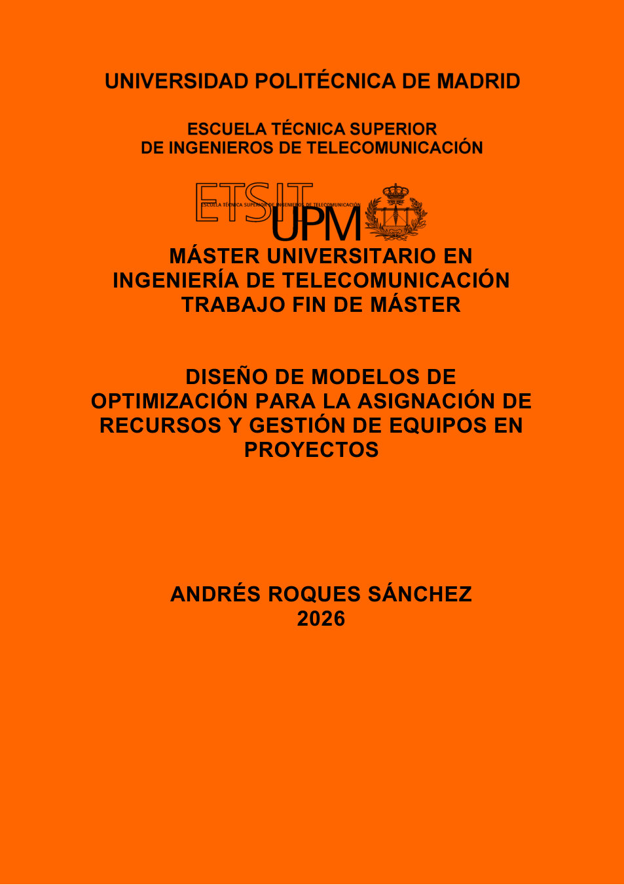

TFM · 2026Optimización · Gestión de proyectos · Ingenieria de prompts (IA)
Diseño de modelos de optimización para la asignación de recursos y gestión de equipos en proyectos
Sistema de apoyo a la decisión para asignar recursos humanos a una cartera multiproyecto mediante modelos MILP, heurística multiarranque y una capa LLM de interpretación.
PythonPyomoHiGHSMILPLLMIA